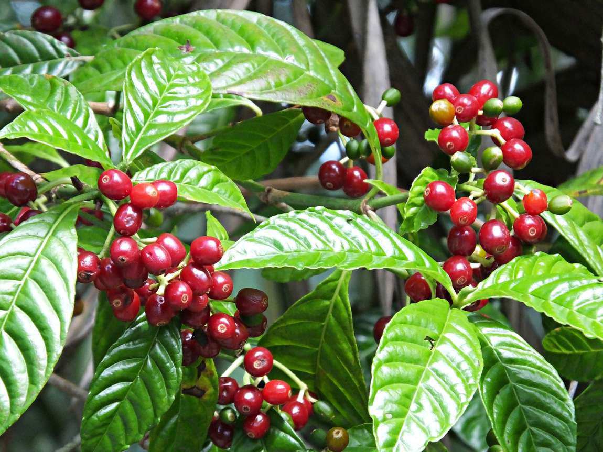

Overview of Kasamarda
Kasamarda, also known as Cassia occidentalis Linn, is a versatile plant used traditionally as an aphrodisiac, digestive aid, and cough remedy. Commonly referred to as Negro Coffee or Coffee Senna, its seeds are sometimes used as a coffee substitute. Despite its uses, the plant's leaves are considered poisonous, so caution is advised. The following information is intended for educational purposes only.
Vernacular Names
- English: Coffee Senna, Negro Coffee, Coffee Weed, Stinking Weed, Foetid Cassia
- Hindi: Kasoundi
- Telugu: Kasavinda, Kasind
- Kannada: Elemuri Soppu, Kasamarada Gida
- Bengali: Kesenda
- Marathi: Kasvida
- Gujarati: Kasondari
- Tamil: Peyaveri
- Urdu: Kasonji
- Assamese: Hant Theng
Sanskrit Synonyms
- Karkasha
- Kasari
- Kasamarda
- Kasaghna
- Kasamardika
- Arimarda
Chemical Constituents
- Cassiollin
- Physcion
- Occidentol I, II
- Tannic Acid
- 36% Mucilage
- Emodin
Classical Categorization
- Susruta: Sarasadigana
- Vagbhata: Sarasadigana
- Kaiyadeva Nighantu: Oshadhi Varga
- Dhanvantari Nighantu: Karaveeradi Varga, Mishraka Varga
- Bhavaprakasha: Shakavarga (Vegetable Group)
Properties & Dosage
- Guna (Qualities): Laghu (Light to digest), Rooksha (Dry)
- Rasa (Taste): Tikta (Bitter), Madhura (Sweet)
- Vipaka: Katu (Pungent taste conversion after digestion)
- Veerya: Ushna (Hot potency)
- Effect on Tridosha: Tridoshahara (Balances all three Doshas), mainly Kapha and Vata Dosha due to Ushna Veerya.
- Prabhava: Vrushya (Aphrodisiac, improves vigor)
Uses & Indications
- Kanthashodhana: Cleanses the throat, useful in sore throat.
- Pachana: Digestive, relieves Ama Dosha.
- Rochana: Improves taste, relieves anorexia.
- Sara: Induces mobility, causes diarrhea, purgation, relieves constipation.
Indications by Part Used
- Leaves: Used as vegetables; treats cough, cold, eczema, dyspepsia, and filariasis. Indicated in asthma and chronic respiratory disorders.
- Flowers: Treats asthma and breathing difficulties. Flower decoction (20 ml, once or twice a day) used for asthma treatment.
- Root: Decoction used for urinary retention, dysuria, inflammatory conditions, and scorpion bites.